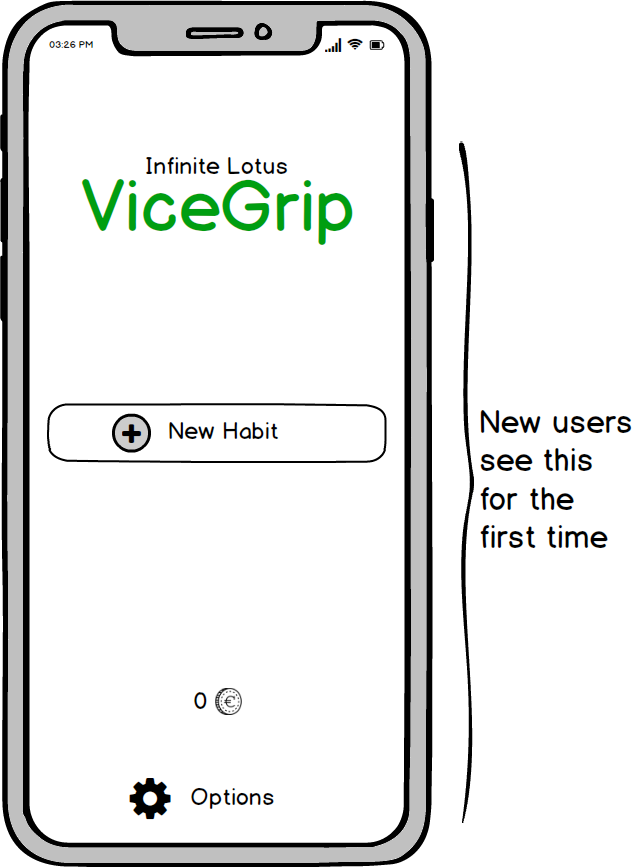
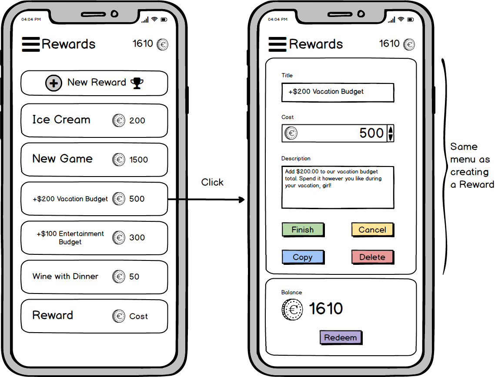

Vice Grip
Infinite Lotus - Software Solutions
Manage your habits and reward systems to achieve your goals!
Abstract
When playing games, it's easy for us to increase our characters skills and levels to grow and better our character to face greater challenges. So why can't we do the same for ourselves in the real world? ViceGrip is an application that makes learning, growing, and improving oneself into an RPG-style game! Set goals, skills, or tasks. Assign points to each Habit based on time spent, goal achieved, or more. Setup rewards for yourself and set their value in points. When you work on your habits, you earn points, and can redeem them for your own rewards!
Problem
The problem is simple. Something each of us face in all phases of our lives. How do we stick to our goals, control our habits, and stay vigilant throughout the process? Often, we set goals for ourselves to learn a skill, kick a habit, or perhaps grow into a new habit. But we all know that sticking to our goals is harder than we think. Changing reoccurring habits is difficult. We often find ourselves losing interest and going back to our old habits without ever reaching our goals.
Strangely this isn't the case when we play virtual characters in video games. The goals are explicit. The progress is tracked and shown. Our perseverance to reach the next stage maintains strong. So how can we bring the game world into our own lives and treat ourselves the way we treat our digital aliases? How can we gamify our habits to be more efficient and, more importantly, vigilant in our efforts?
Lastly, there is a business problem. While this application can help people reach their goals and set rewards for themselves, it is completely free. Furthermore, there is no clear monetization factor with habits on a personal level. So, how can we introduce monetization for Infinite Lotus through this application?
Process
As with any UX problem. I started by interviewing the stakeholders to intimately understand what the application was, who it was for, how they would use it, what it hoped to achieve, what the companies goals for the application were, and finally; what they expected out of the design process for the development team, the marketing team, and the internal teams.
After interviewing with the Project Lead, the Lead Developer, and a few other stakeholders; I had a solid foundation for the idea of the application. The next step was to process the information and roughly sketch out an initial design layout to help strengthen the communication between the design team and the rest of the company.

I started out with the application map. It's quite simple. The user starts on the home screen (shown below). As with a lot of popular apps, they can swipe in a direction to move to a different screen. Swiping down lead you to the top screen, your Habits. Beneath you find your Rewards. Note here I initially jotted them as "Awards" in my sketches. To the left you find your special habits, the Promos. These are how we solved the monetization aspect of the application. Finally, to the right, is the options menu.

The next thing I sketched was the Home Screen. Since this application will be used multiple times a day, it is essential that we get the home screen correct. As it is the first thing the user sees on start-up and there should be zero friction when you're maintaining your habits. The initial design was a bit off, but even here the importance of the top three habits was important. Later, the screen would emphasize this and reduce the logo and options button further.

I then focused on the core of the application, the Habits.


The highlight of the application, the actual Habits. When you swipe to the Habits screen you first see your current Habits in priority order. The first four will be the ones highlighted on the home screen for easy access. It is meant for the habits you are focusing on and/or the habits that need the most upkeep i.e. daily Habits.
Habits should be easy to create and maintain as they are the core of the application. They each have a title, a description, an increment type, and the points earned. For example, let's say you want to go to the gym more often. The title is require but can be whatever you want, such as "Go to the Gym". You may optionally add a description for notes or details. In this example it might be "20 minutes of cardio. 40 minutes of weights". Then you can set the increment type. These can be one time events such as errands, custom increments for daily tasks such as drinking more water, or timed events; like we'll use for this gym example. Finally, you set your points based on the increment. Since we have chosen a timed event, the points awarded will be per hour. In this case we'll set it to 50 points per hour. This point system is completely up to you. The difference between 5, 50, 500, or 5 billion points depends on you and your rewards. When your done, the new Habit will appear in the fifth position of your list be default. This assumes that it is the highest priority Habit after your main four Habits. You can simply reorder your Habits by holding and dragging to the appropriate position. This will automatically push the other Habits respectively. When you click and hold, it will also display a quick delete in the corner of the Habit. There will be a second message pop-up to circumvent an accidental deletion. In the Habit edit menu, you can easily copy a Habit for convenient creation of other similar Habits. Once a habit is completed, it will automatically delete if it was a one time task; or reset if it was a recurring Habit, such as the one in our example.


The motivation comes in the form of Rewards. Just like Habits, you set your own Rewards and their value.
Rewards are much simpler. They have a title, an optional description, recurrence, and a value. Like Habits, they can be copied and deleted. Let's say one of your rewards is going out to a nice restaurant. You would set a title such as "Dinner at La Restaurant", an optional description such as "A nice night out at your favourite restaurant". Then you would set a value. Remember, these should reflect your points earned from your Habits. Let's say for this example we set this Reward at "300 points". Finally, since you can redeem this reward multiple times, you would set the recurrence to "Multiple" rather than "Single".

Finally, we have Promos! This was our solution to the monetization problem. How can you monetize an app about routine habits? Through the reward system, of course!
Promos work just like Rewards and their Habits, except for one important detail: they aren't set by you. Promos are Rewards and Habits set by your favourite companies such as retail, food, and digital goods; or services like spas. On the business end, Promos are a different way of managing loyalty programs for your customers. In the example above, we can see a simple coffee shop loyalty Promo award. Whenever you drink a hot beverage from them you'll get a QR code that you can scan with your app to increment your Habit. Then you can redeem the rewards in real life! In this example buying a hot beverage gets you "1 Coffee Bean"! You can then redeem 5 "Coffee Beans" to get a free beverage!
This solution is an elegant way to monetize the application. It doesn't change the nature of the application and it rewards customers for doing what they might already do. Thereby promoting customer loyalty. The platform serves as a way to keep all your loyalty programs, promotions, contests, and more; in one place. In a platform the users already visit daily. Infinite Lotus can then make deals with various companies to manage their promotional programs. The value being an already built and established platform as well as a customer base.
After the initial sketch phase, I discussed the quick sketches with the project lead to ensure I had understood the concept well and we were ready to create the mock-ups.
Solution




I'm an enthusiastic developer and designer and I have an obsession with technology and aesthetic. I'm known to have a creative mind with endless ideas and innovative solutions. I'm constantly learning and updating a wide range of skills in software development and design. I'm inquisitive and always looking for a new adventure!
Deduction
I'm an enthusiastic developer and designer and I have an obsession with technology and aesthetic. I'm known to have a creative mind with endless ideas and innovative solutions. I'm constantly learning and updating a wide range of skills in software development and design. I'm inquisitive and always looking for a new adventure!